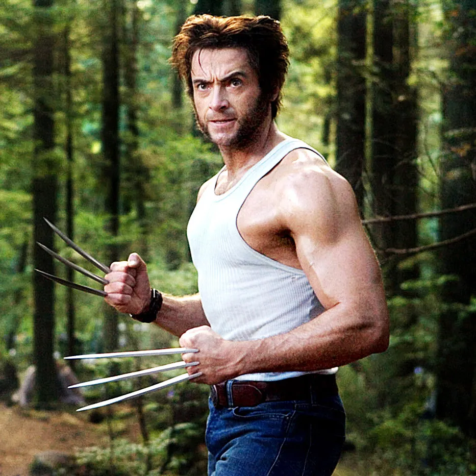

If you don't know who he is, then i'm afraid we can't be bestfriends.
BUt if you are interested in knowing who he is, then you are in the right place.
The person in the picture is Hugh Jackman.
The ONE and ONLY wolverine actor, and the best man to fit the wolverine actor in MCU.
He became my favorite celebrity due to the fact that he looked so cool and badass when i was young.